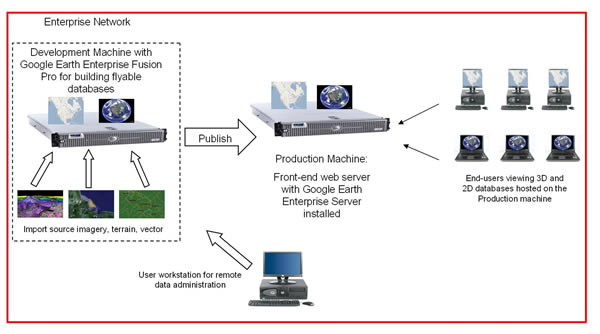

Before you install Google Earth Enterprise (GEE), you must configure your hardware, network, and GEE users. You should also carefully decide in advance where you want to store your Fusion data and where you want to publish your Fusion databases. During installation, you'll be prompted for this information. The following sections provide information about GEE requirements, considerations, and best practices. Be sure to complete all of the tasks described in these sections before installing GEE.
See the GEE License Agreement and your Ordering Document for information about the maximum number of physical CPU cores allowed per machine. If you want to exceed the maximum, you'll need to buy more Fusion or core licenses.
The best practices for naming your host volumes are:
gevol as your volume naming convention because it's unlikely to conflict with standard Linux volume definitions. Linux systems frequently use either /vol(*) or /data(*) as the local volume definition on a new system, so using this convention for Fusion can cause name conflicts if you later switch from a single workstation to a network-based configuration. For example, if you initially define /vol1/assets as the network location for a Fusion asset root, and you later add another workstation that has a local volume called /vol1, that workstation cannot reference /vol1/assets through the network because of the name conflict with its local volume definition. (See “Planning the Location of Your Asset Root” for more information about the asset root.) You can avoid this conflict by using any unique naming convention for all volumes on your network (such as /vol1... /voln), but /gevol is a good choice because it's descriptive.GEE Server and the Fusion asset root, source volumes, and publish root require large amounts of disk storage space. Fusion requires about three times as much storage space as GEE Server. The storage space can be either in the form of internal disks, directly attached storage devices, network-attached storage (NAS) devices, or storage area network (SAN) devices. Typically, these devices are configured into redundant arrays of independent disks (RAIDs) and presented to the operating system as volumes. Volumes can range in size, from several hundred gigabytes to tens of terabytes.
The difference between configuring a workstation with one, two, or three volumes is how you defne the mount point for the source and asset volumes.
When configuring a Linux workstation, it is best practice to use the following mount point naming conventions:
Mount the single drive to slash (/). All data
(/gevol/assets, /gevol/src, and
/gevol/published_dbs) resides on that drive with the local
path defined using the /gevol naming convention.
Mount the small system drive to slash (/). Mount the larger
data drive to /gevol/. Source and asset data volumes can then
be defined as /gevol/assets and /gevol/src.
Mount the small system drive to slash (/). Mount the first
large data drive to /gevol/assets. Mount the second large
data drive to /gevol/src.
There are several strategies for storing very large data sets. Fusion can read from and write to multiple volumes. If your requirements exceed the capacity of three volumes, consult your GEE sales engineer to determine the best way to configure your storage needs,
It is also important to keep internal and external storage devices separated so that if your internal server goes down, it does not affect your ability to serve published data to external clients. Likewise, if your external server goes down, you can replace it and publish from the internal storage device. Perhaps more importantly, keeping your internal and external storage devices separate reduces the possibility of performance problems that could occur if you are building a large data set or if a client requests a time-consuming search.
During Fusion installation, you must specify a location for your asset root. The asset root is the main location where all of the assets (resources, map layers, projects, and databases) are stored that are created with Fusion. (Refer to the Reference Guide for more information about the asset root.)
The asset root must be located on a single volume. It cannot be split across multiple volumes. Therefore, it is important to think ahead and allocate as much storage space as possible for the asset root.
Unless you have an established partitioning scheme for all of your storage devices, you should accept the default partitioning scheme presented to you while installing Linux. That scheme gives you a reasonable amount of space in /opt for GEE and other system software, a small amount of space for /home, and the remaining space on your storage device for the asset root.
You should also accept the default volume designation for your asset root during installation (/gevol/assets), unless that name conflicts with your established naming conventions.
Note: It is a good idea to dedicate a network-attached storage device (NAS) for your asset root.
During GEE Server installation, you must specify a volume for the publish root. The publish root is the directory in which all of your published databases are stored.
If you specify a different volume than the asset root:
Whenever you publish a database, Fusion registers the database on the specified volume and then copies all of the database files to the designated volume.
For example, if you specify /gevol/assets for your asset root and /data1/published_dbs for your publish root: whenever you publish a database, Fusion copies all of the database files from /gevol/assets to /data1/published_dbs (unless you allow symbolic links during installation). Copying takes more time as well as extra disk space.
If you specify the same volume as the asset root:
Whenever you publish a database, Fusion registers the database on the specified volume and sets symbolic links to the database files.
For example, if you specify /gevol/assets for your asset root and /gevol/published_dbs for your publish root: whenever you publish a database, Fusion registers the database on gevol and sets hard links to the database files. No copying is necessary.
The GEE installer automatically configures certain system users to perform background tasks at the system level. If you accept the default user names and allow the installer to create those users on your local workstation, you are implementing local authentication only. Local authentication is designed for standalone workstations only.
If you are using GEE over a network with at least two workstations, storage devices, or servers, the best practice is to use a centralized network authentication system such as LDAP, NIS, or one of the many commercially available systems available.
If you use a centralized network authentication system, you must add the following users to your authentication system’s user list:
The primary group for all of these users is gegroup.
The installer prompts you to assign a user ID (UID) for each of these users. You can accept the installer-assigned UID or specify a unique UID for each user. If you are using a standalone workstation, you can simply accept the installer-assigned UIDs. However, if you are in a multi-user environment in which multiple workstations share a common asset root on a NAS/SAN, these users must have the same UID on all devices, so you must assign them explicitly in both your network authentication system and in GEE.
To determine the UIDs to assign, examine the UIDs that are already used on each device on which you plan to install GEE software, and determine four UIDs that are available on all devices. Then, when the installer prompts you for the UIDs, assign the same UIDs for these users in GEE as on all network devices.
Note: You must assign these users on the NAS as well as the workstations and servers.
Be sure to configure each GEE workstation, storage device, and GEE Server to use your network authentication system. For more information, see your network authentication system documentation. For more configuration options, see Configuring Publishing Authentication in the Administration Guide.
You can use customized user names, user IDs, and group names. During installation, you are asked if you want to change the default user and group names. If you choose yes, you are prompted to provide a user and group name of your choice.
You do not need to install all products on all devices. Follow the guidelines below.
Development machine:
Production machine:
The following diagram shows a sample system configuration.

In this example, there are two server-class machines assigned to data building and data hosting tasks, plus one workstation for data management. A GIS specialist uses the workstation to remotely log in to the development machine with Fusion installed to import source GIS data and output a flyable globe to publish for end users. GEE Server software is also installed on the development machine so the GIS specialist may perform quality assurance tests on the data before publishing to the production machine. Only the GEE Server is installed on the production machine, which authorized end-users in the network may access with Google Earth Enterprise Client (Earth EC) for 3D databases, or a compatible web browser for 2D databases.